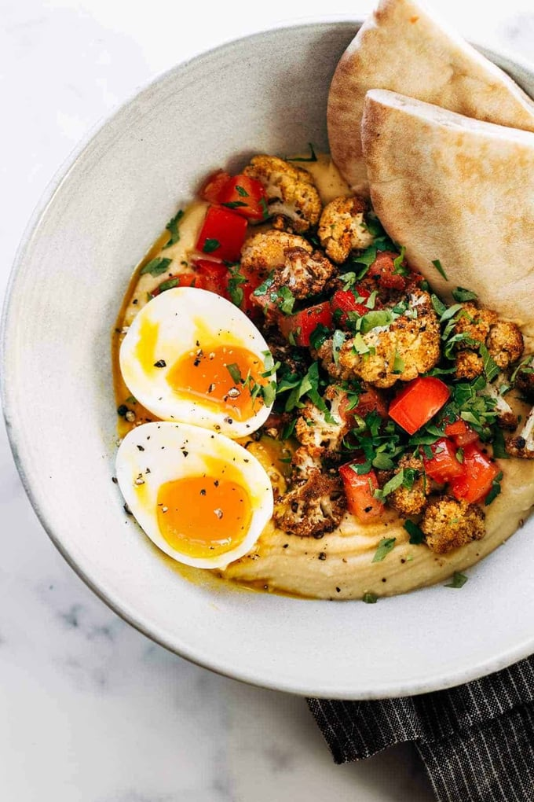

`
Roasted Cauliflower Hummus Bowls

Description
These Roasted Cauliflower Hummus Bowls are LIFE-CHANGING. A bed of garlicky creamy hummus, piled high with spiced roasted cauliflower, and a speckling of fresh lemony tomatoes and herbs.
Ingredients
Roasted Cauliflower
- 1 head cauliflower, cut into florets
- 1 tablespoon olive oil
- 1/2 tablespoon kosher salt
- 1 teaspoon each paprika, cumin, and oregano
- a pinch of black pepper